1.7.1.4 DevOps 서비스를 통해 Helm Chart로 배포 자동화하기
DevOps 프로젝트 만들기
이전에 생성한 프로젝트를 그대로 사용하거나, 새롭게 프로젝트를 만듭니다.
Code Repository를 사용하여 애플리케이션 코드 관리하기
-
코드 저장소 생성을 위해 왼쪽 메뉴에서 Code Repositories를 클릭합니다.
-
Create repository를 클릭하여 저장소를 만듭니다.
- Repository name: 예) oci-devops-mychart
-
실제 개발 작업은 git 명령을 통해 개발 PC에서 진행하면 됩니다. 저장소 상세정보 위에 있는 Clone 버튼을 하면 Clone 명령어가 아래 그림처럼 뜨게 됩니다. 여기서는 Clone with HTTPS를 사용하겠습니다.
-
개발 PC에 복사한 주소를 사용해 git clone 명령어를 통해 복제합니다.
git clone <YourClonewithHTTPS URL> -
이때 사용자 인증이 필요합니다. HTTPS기반 사용자 인증시 아래 유저명 형식과 AuthToken을 사용합니다.
샘플 Helm 차트 만들기
1.4.1.3 Helm Chart Repository로 사용하기를 참고하여 배포할 chart를 작성합니다.
-
복사한 코드 저장소로 이동하여, Helm 차트를 만듭니다.
$ cd oci-devops-mychart/ $ helm create mychart Creating mychart -
차트 작성
생성된 차트는 nginx를 배포하는 샘플 차트입니다. 실제 차트 작성을 위해서는 앱에 맞게 수정하겠지만, 지금은 배포 테스트로 수정없이 그냥 사용합니다.
-
Helm Chart를 기본 구성 파일이 만들어 집니다. 생성된 차트는 기본적으로 nginx를 배포하게 구성되어 있습니다.
-
코드를 Code Repository에 Push 합니다.
git add . git commit -m "init" git push -
코드 작성 및 반영 완료
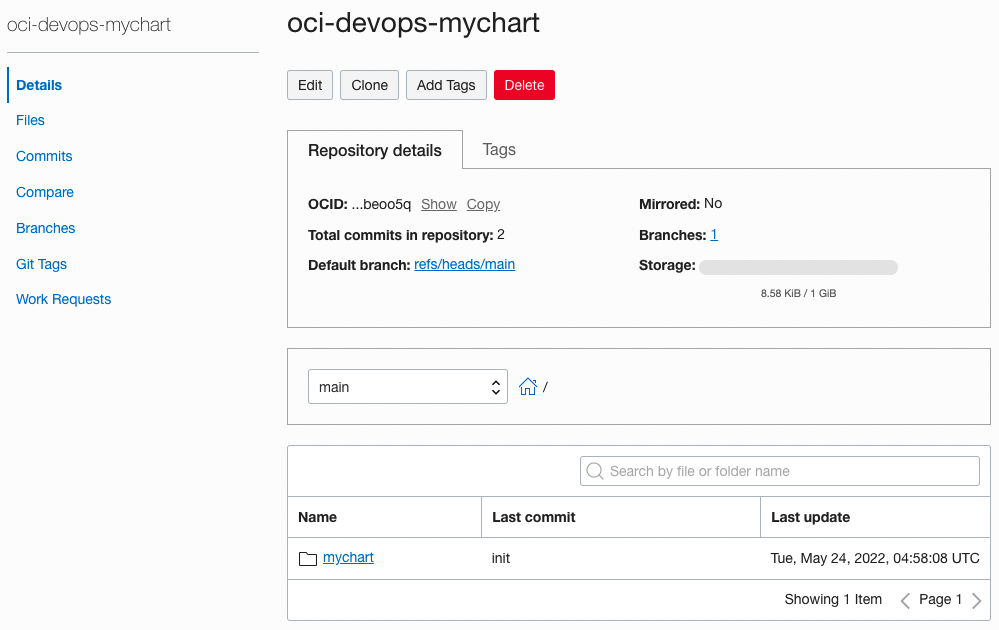
Build Pipeline 만들기
CI/CD 중에 코드를 빌드하여 배포 산출물을 만드는 CI 과정에 해당되는 부분을 Build Pipeline을 통해 구성이 가능합니다.
-
프로젝트 페이지로 이동하여 왼쪽 메뉴의 Build Pipelines로 이동합니다.
-
Create build pipeline을 클릭하여 파이프라인을 생성합니다.
- Name: 예) mychart-build-pipeline
-
생성된 파이프라인을 클릭합니다.
-
그림과 같이 Stage를 추가하여 파이프라인 흐름을 구성할 수 있습니다. Add Stage를 클릭합니다.
Build Stage 만들기
-
빌드를 위해 먼저 Managed Build Stage를 추가합니다.
-
Managed Build Stage 설정
-
Stage name: 예) build-stage
-
Build Spec File Path: 빌드 스크립트 경로를 지정합니다. 기본적으로 소스 루트에 있는 build_spec.yaml을 파일을 사용합니다.
-
Primary Code Repository: 빌드할 메인 소스가 있는 코드 저장소를 지정합니다.
-
대상 소스 코드가 있는 저장소를 지정합니다.
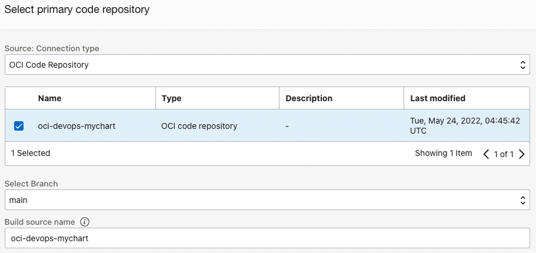
-
-
-
설정된 Stage를 Add를 클릭하여 추가합니다.
-
테스트처럼 소스 코드상의 Build Spec의 정의가 필요합니다.
-
소스 코드의 root 경로에 build_spec.yaml을 정의합니다.
-
build_spec.yaml
- env.variables.ocir_username: OCIR 로그인시 사용할 유저명
- env.vaultVariables.ocir_authtoken: helm cli로 OCIR에 로그인시 사용할 AuthToken이 저장된 Vault Secret
- env.exportedVariables
- CHART_VERSION: 이후 배포시 사용하기 위해 차트의 값을 동적으로 가져옵니다.
- steps
- Helm Chart 단계: OCIR에 helm cli를 통해 Helm Chart를 배포합니다. 배포전 로그인 인증 패스워드로 사용할 유저의 AuthToken은 보안을 위해 Vault Secret을 사용합니다.
version: 0.1 component: build timeoutInSeconds: 6000 runAs: root shell: bash env: # these are local variables to the build config variables: ocir_username: "winter" # the value of a vaultVariable is the secret-id (in OCI ID format) stored in the OCI Vault service # you can then access the value of that secret in your build_spec.yaml commands vaultVariables: ocir_authtoken: "ocid1.vaultsecret..." # exportedVariables are made available to use as parameters in sucessor Build Pipeline stages # For this Build to run, the Build Pipeline needs to have a BUILDRUN_HASH parameter set exportedVariables: - CHART_NAME - CHART_VERSION - TENANCY_NAMESPACE - REPO_NAME # Its a native way to fetch artifacts from external or artifact repo or a file path to use before a stage. # More about buildspec formats - https://docs.oracle.com/en-us/iaas/Content/devops/using/build_specs.htm inputArtifacts: steps: - type: Command timeoutInSeconds: 1200 name: "Install Tools" command: | mkdir -p ~/.local/bin wget https://github.com/mikefarah/yq/releases/download/v4.25.1/yq_linux_amd64 -O ~/.local/bin/yq chmod +x ~/.local/bin/yq export PATH=$HOME/.local/bin:$PATH - type: Command name: "Build Source" timeoutInSeconds: 4000 command: | echo no action echo no action - type: Command timeoutInSeconds: 1200 name: "Helm Chart" command: | TENANCY_NAMESPACE=`oci os ns get --query data --raw-output` cd ${OCI_PRIMARY_SOURCE_DIR} cd mychart helm package . helm registry login -u $TENANCY_NAMESPACE/$ocir_username ${OCI_RESOURCE_PRINCIPAL_REGION}.ocir.io -p $ocir_authtoken export HELM_EXPERIMENTAL_OCI=1 helm push ./*.tgz oci://${OCI_RESOURCE_PRINCIPAL_REGION}.ocir.io/$TENANCY_NAMESPACE/helm - type: Command timeoutInSeconds: 1200 name: "Check exportedValues" command: | cd ${OCI_PRIMARY_SOURCE_DIR}/mychart CHART_NAME=`yq eval '.name' Chart.yaml` CHART_VERSION=`yq eval '.version' Chart.yaml` REPO_NAME=helm/$CHART_NAME outputArtifacts:
-
-
빌드 스테이지가 완성되었습니다.
AuthToken 저장을 위한 Vault Secret 만들기
-
OCI 콘솔에 로그인합니다.
-
좌측 상단 햄버거 메뉴에서 Identity & Security > Vault로 이동합니다.
-
Create Vault를 클릭하여 새 Vault를 만듭니다.
- Name: 예) myVault
-
생성된 Vault로 이동하여 Master Encryption Key를 만듭니다. Secret 생성을 위해 암호화 방식은 AES를 선택합니다.
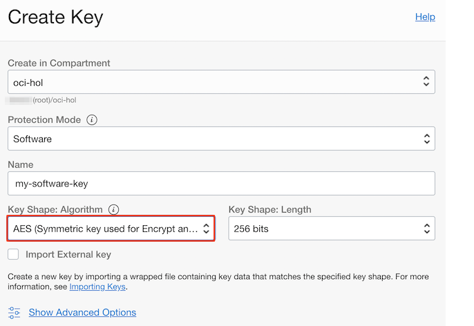
-
왼쪽 메뉴에서 Resources > Secrets로 이동하여 새 Secret을 만듭니다. 앞서 만든 암호화 키를 선택하고, Secret Contents에 OCIR에 접속할 유저의 AuthToken을 입력합니다.
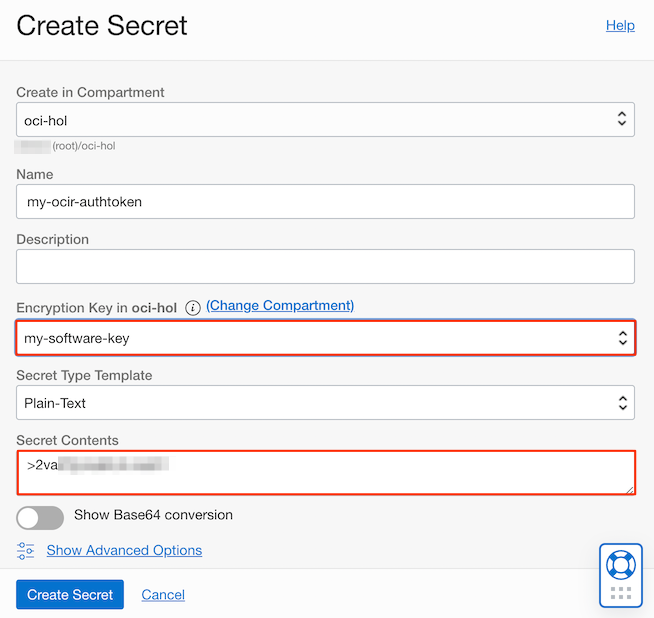
-
만든 Secret의 OCID를 복사합니다.
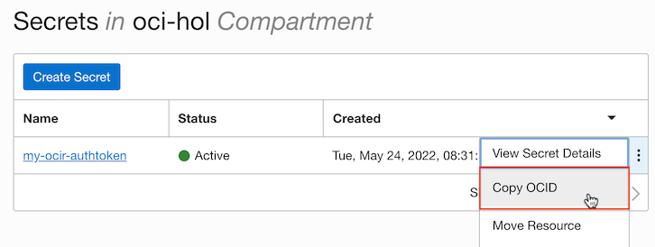
-
소스로 돌아가서, 앞서 만든 build_spec.yaml의 env.vaultVariables.ocir_authtoken에 복사한 Secret의 OCID를 추가합니다.
- build_spec.yaml
env: # these are local variables to the build config variables: ocir_username: "winter" # the value of a vaultVariable is the secret-id (in OCI ID format) stored in the OCI Vault service # you can then access the value of that secret in your build_spec.yaml commands vaultVariables: ocir_authtoken: "ocid1.vaultsecret..." -
소스코드를 Commit & Push 하여 코드를 반영합니다.
git add build_spec.yaml git commit -m "add build_spec" git push
Deployment Pipeline 만들기
CI/CD 중에 빌드된 산출물을 가지고 실제 서버에 배포하는 CD 과정에 해당되는 부분을 Deployment Pipeline을 통해 구성이 가능합니다.
DevOps 서비스를 위한 Policy 설정하기
-
앞서 만든 Policy에 Deployment Pipeline에서 OCIR에 접근할 수 있도록 권한을 추가합니다.
-
Compartment 레벨로 다음 Policy를 만듭니다.
- Name: 예) DevOps-compartment-policy
Allow dynamic-group DeployDynamicGroup to read repos in compartment <YourCompartmentName> -
Root Compartment 레벨로 다음 Policy를 만듭니다.
- Name: 예) DevOps-root-policy
OCIR에 Repository를 Push하기 전에 미리 생성하지 않으면 기본적으로 Root Compartment에 이미지가 Push됩니다. 이때 권한으로 에러가 발생하며, Root Compartment에도 허용하고자 하면 다음을 추가합니다.
Allow dynamic-group BuildDynamicGroup to read repos in tenancy
Kubernetes Environment 등록하기
- 앞서 등록한 OKE 환경이 없는 경우, 프로젝트 페이지로 이동하여 왼쪽 메뉴의 Environments로 이동하여 배포할 OKE 환경을 등록합니다.
Kubernetes에 배포할 Helm Chart Artifact 만들기
-
프로젝트 페이지로 이동하여 왼쪽 메뉴의 Artifacts로 이동합니다.
-
Add artifact를 클릭하여 배포할 Helm Chart 자원을 추가합니다.
- Type을 Helm Chart로 선택합니다.
- Helm Chart URL은
oci://<region-key>.ocir.io/<tenancy-namespace>/<repo-name>형식으로 OCIR에 위치한 Helm Chart 주소를 입력합니다. - Version은 OCIR에서 가져올 차트 버전이자, Tag로 그림과 같이 파라미터를 사용할 수 있습니다. 아래에서는 빌드 파이프라인의 exportedVariables 중 하나인 CHART_VERSION를 사용하였습니다.
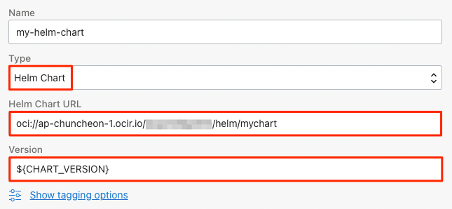
-
필요하면, Add artifact를 클릭하여 배포할 Helm Chart 배포시 사용할 value 자원도 추가합니다.
-
Type: General artifact 선택
-
Artifact source: 여기서는 Inline을 선택합니다.
-
Value: 기본 Chart 설정에서 재정의하여 사용할 Chart Value를 입력합니다. 여기서는 테스트용도로 Service Type을 ClusterIP에서 LoadBalancer로 변경하겠습니다.
service: type: LoadBalancer
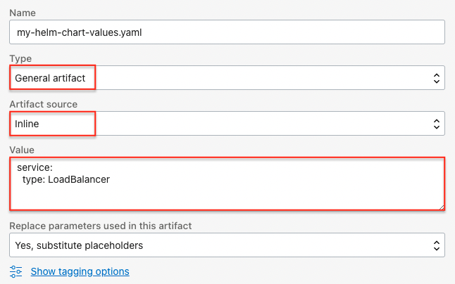
-
Deploy Pipeline 만들기
-
프로젝트 페이지로 이동하여 왼쪽 메뉴의 Deployment Pipelines로 이동합니다.
-
Create pipeline을 클릭하여 파이프라인을 생성합니다.
- Name: 예) mychart-deployment-pipeline
-
생성된 파이프라인을 클릭합니다.
-
Add Stage를 클릭하여 Install helm chart to Kubernetes cluster를 선택합니다.
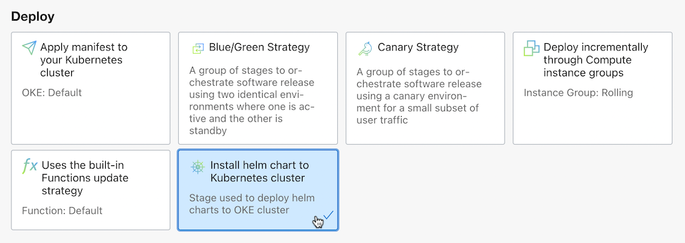
-
앞서 만든 자원들을 사용하여 Helm Chart 배포 설정을 합니다.
- Environment: 배포할 OKE 클러스터 선택
- Release name: 차트 배포시 사용할 이름
- Helm Chart: 앞서 등록한 배포용 Helm Chart Artifact
- Value: 앞서 등록한 차트 배포시 사용할 Value Artifact
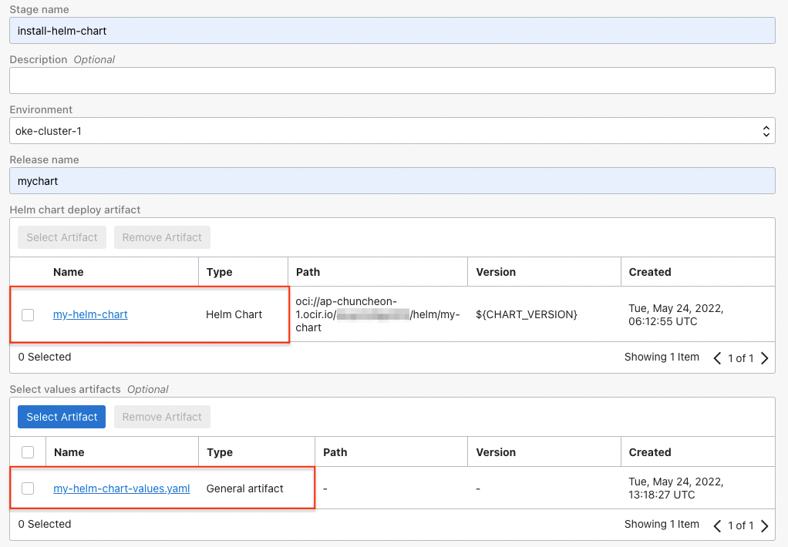
Build Pipeline에서 Deployment Pipeline 호출하기
앞서 만든 Build Pipeline이 끝나고, 배포가 될수 있도록 Deployment Pipeline 호출을 추가합니다.
- 앞서 만든 Build Pipelines으로 이동합니다.
- 파이프라인 마지막에 Trigger Deployment Stage의 오른쪽 점 세개 클릭 > View details를 선택합니다.
- 수정을 위해 Edit Stage를 선택합니다.
- Select deployment pipeline을 클릭하여 새로 만든 Helm Chart 배포용 Deployment Pipeline로 변경 저장합니다.
- 빌드후 배포하는 전체 흐름이 완료되었습니다.
테스트
앞서와 동일하게 Trigger를 설정하여 테스트할 수 있습니다. 여기서는 빠른 테스트르 위해 Start Manual Run을 이용하여 테스트합니다.
-
앞서 만든 Build Pipelines으로 이동합니다.
-
우측 상단에 있는 Start Manual Run을 클릭하여 실행합니다.
-
빌드 파이프라인 실행이 완료되면, OCIR에서 만들어진 차트를 아래와 같이 확인할 수 있습니다.
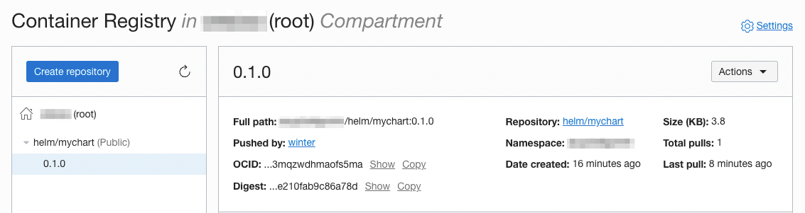
-
Deployment Pipeline에서 그림과 같이 배포 성공합니다.
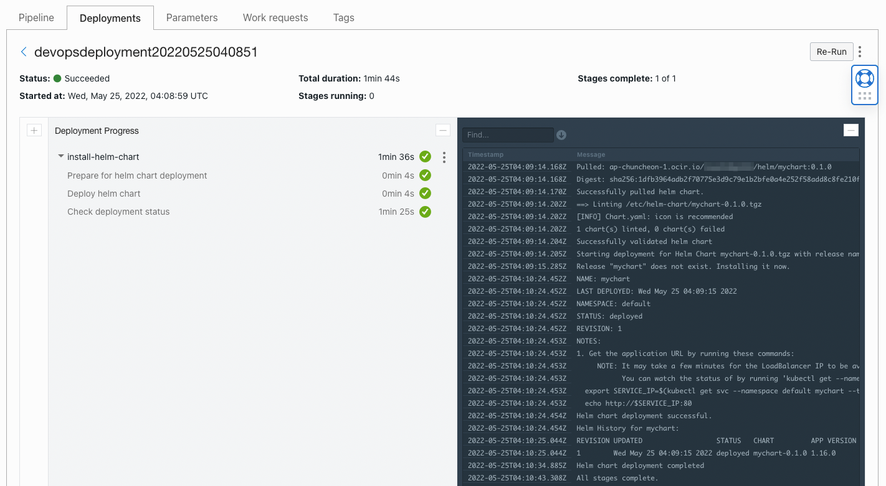
-
OKE 클러스터에서도 Helm Chart 배포된 것을 볼 수 있습니다. 또는 value.yaml 파일이 반영되어 LoadBalancer 서비스 타입이 만들어 졌습니다.
winter@cloudshell:~ (ap-chuncheon-1)$ helm list NAME NAMESPACE REVISION UPDATED STATUS CHART APP VERSION mychart default 1 2022-05-25 04:09:15.518487366 +0000 UTC deployed mychart-0.1.0 1.16.0 winter@cloudshell:~ (ap-chuncheon-1)$ kubectl get all NAME READY STATUS RESTARTS AGE pod/mychart-75c4d695c4-gqgn8 1/1 Running 0 26m NAME TYPE CLUSTER-IP EXTERNAL-IP PORT(S) AGE service/kubernetes ClusterIP 10.96.0.1 <none> 443/TCP 13d service/mychart LoadBalancer 10.96.251.103 129.xxx.xxx.xxx 80:32461/TCP 26m NAME READY UP-TO-DATE AVAILABLE AGE deployment.apps/mychart 1/1 1 1 26m NAME DESIRED CURRENT READY AGE replicaset.apps/mychart-75c4d695c4 1 1 1 26m
이 글은 개인으로서, 개인의 시간을 할애하여 작성된 글입니다. 글의 내용에 오류가 있을 수 있으며, 글 속의 의견은 개인적인 의견입니다.